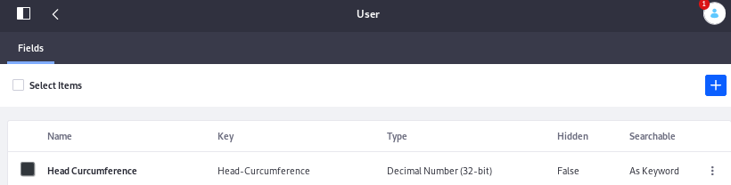
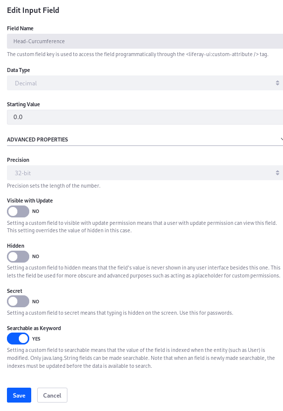

—
header-id: custom-fields
Custom Fields
[TOC levels=1-4]
Have you ever wondered why there’s no Head Circumference field in the form for adding users to @product@? Probably because most sites based on @product@ don’t need it. If you’re an administrator at the Lunar Resort, however, you certainly need to know your guests’ head circumference so you can provide them with a properly fitting helmet.
Many of @product@’s assets and resources let you add new fields to their edit forms. Here’s the complete list:
- Blogs Entry
- Calendar Event
- Document
- Documents Folder
- Knowledge Base Article
- Knowledge Base Folder
- Message Boards Category
- Message Boards Message
- Organization
- Page
- Role
- Site
- User
- User Group
- Web Content Article
- Web Content Folder
- Wiki Page
| Developer Use Case: Adding custom fields to @product@ resources affords | flexibility to developers. Suppose you must limit the number of users | that can be assigned to a particular Role. First an administrator creates a custom | field called max-users for the Role. A developer then creates a module that | inserts logic before a user is added to that Role. If the logic detects that | the maximum number of Role users would be exceeded by completing the action, an | exception is thrown and the action does not complete.
Adding Custom Fields
To add custom fields, find the Custom Fields entry beneath the Control Panel’s Configuration heading.
To add a custom field to one of the listed entities,
Choose a resource by clicking on it.
Click the add ( ) button.
) button.
Choose a field type: Text Area, Input Field, Dropdown, Checkbox, Radio, Geolocation, Date, True/False.
Add a name that’s used as a key for accessing the field programmatically.
| Note: The Key you enter here is the name of the new field. It’s stored | in the database and used by developers to access the custom field with the | <liferay-ui:custom-attribute /> tag. It is also used to label the | field in the UI.
Choose the Data Type of field and set any advanced properties.

Figure 1: At The Lunar Resort, a Head Circumference field is necessary for all users.
Click Save.
That’s it.
Once you have a custom field for a resource, go find it in the UI of the resource. First find the UI location for the resource, and all its custom fields are displayed in a Custom Fields panel. For example, consider the Users UI:
Navigate to Control Panel → Users and Organizations. Click on a User to open the Edit User form and scroll down to find your custom field.

Figure 2: The Custom Fields panel is found at the bottom of the Edit User form.
Editing a Custom Field
You can’t change the key or field type of a custom field, but you can delete it and create a new one if necessary. Additionally, once you create the custom field, there are properties you can configure. For example, here’s the Head Circumference field’s edit page:

Figure 3: Custom Fields can be configured after you create them. The exact options depend on the field type you choose.
Edit an individual custom field’s permissions by clicking the field’s kebab menu ( ), then Permissions. Permission can be granted or removed for these actions:
), then Permissions. Permission can be granted or removed for these actions:
- Delete
- Permissions
- Update
- View

Figure 4: You can delete a custom field, edit it, or configure its permissions.
Custom fields make many of @product@’s entities extensible directly from the administrative user interface. Use them as is or combine them with some back-end code, and you have yet another powerful, flexible feature at your disposal. As they’re fond of saying at The Lunar Resort, “The sky is certainly not the limit.”